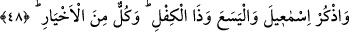
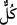

48. İsmail’i, Elyesa’yı, Zülkifl’i de an. Hepsi de iyilerdendir.
İbrahim oğlu “İsmail’i, …” Allah’ın selâmı her ikisinin de üzerine olsun! Bu İsmâîl,
Katâde’nin dediği gibi İşmûîl b. Halkâsân değildir.
Allah Teâlâ’nın İsmail’i babasından ve kardeşinden ayrı olarak zikretmesinin sebebi,
sırf burada yâd edilmesinin gayesi olan muhteşem sabrına temas etmektir. Bilindiği gibi,
o canını Allah için kurban edilmek üzere teslim etmişti. Diğer bir sebebi de kendisine
daha fazla tâzim edilmesi olabilir. Çünkü o, bütün nebî ve Rasûllerin en üstünü olan
zâtın ceddidir.
Ahtûb oğlu“el-Yesa’yı…” İlyâs (a.s.) el-Yesa’yı İsrailoğulları’nın başına halife
olarak bırakmış iken sonra peygamber olarak gönderilmiştir.
Özel isim olmasına rağmen Yesa’ kelimesine belirsiz bir kelime olduğu için lâm-ı târif
() getirilerek başka isimlerle karışma ihtimali ortadan kaldırılmak istenmiştir. Şâirin
şu sözünde olduğu gibi: “el-Yezîd’in oğlu Velid’in mübârek biri olduğunu gördüm.”
Yesa’ın amcaoğlu olan “Zülkifl’i de an.” Zülkifl, babasından sonra Suriye
civarındaki bir kavme gönderilen Yüşîr b. Eyyûb (a.s.) da olabilir. Bu zâtın bir
peygamber olup olmadığı tartışmalıdır. Çoğu âlim, peygamberlerle birlikte
zikredilmesini göz önüne alarak onun peygamber olduğuna kanâat getirmiştir.
Zülkifl’in İlyâs, Yûşa’, Zekeriyyâ veya bir başkası olup olmadığı konusu da
tartışmalıdır. Bu zâta Zülkifl lâkabının verilmiş olmasının nedeni, İsrailoğulları’nın
elinden kaçıp kendisine sığınan yüz peygambere kucak açıp onları öldürülmekten
kurtarması ve kendilerine “kefil” olması (kefil: kifl), yâni yeme-içmelerini deruhte edip
giyim-kuşamlarını sağlaması ve düşmanlarından gizlemesidir.
et-Te’vîlâtü’n-Necmiyye’de der ki: Rivâyete göre el-Yesa’ ile Zülkifl kardeş imiş.
Zülkifl, kendi zamanında ölen sâlih bir adamın işini tekeffül etmiş ki bu sâlih zat, Allah
için günde yüz (defa/rek’at) namaz kıldığı için Allah da kendisine böyle güzel bir
karşılık ihsân etmiş.
Bunların “hepsi de iyilerden” yâni hayırlı oluşları ile meşhur kişilerden“dir.” ()
lâfzındaki tenvin, () zamirinden bedeldir, yâni zikredilen zâtların hepsi demektir.
Peygamberlerle ilgili bu âyet-i kerimeler, Hz. Peygamber’i (s.a.) teselli etmekte ve
ta’ziye bildirmektedir. Şöyle ki: Mademki bu peygamberler, daha az üstün olmalarına
rağmen tâat kılmaya çalıştılar, düşmanlarından gelen sıkıntı ve âfetlere göğüs gerdiler,
onların belâ ve eziyetlerine direnip sabrettiler, o halde Peygamber (s.a.) bu zatlardan
daha üstün olması hasebiyle bütün bunları yapmaya daha lâyıktır. Çünkü üstün olan,
üstün olduğu kişilerin göğüs geremediği şeylere de göğüs gerer. Zira rütbesi bu sâyede
tamamlanacak, yüceliği böylece ortaya çıkacaktır.
Keşfü’l-esrâr’da der ki: Hz. Sıddık’ın kızı Esmâ Vâlidemiz’in rivâyetine göre Hz.
Peygamber (s.a.) bir grup Kureyşlinin yanından geçerken içlerinden birisi kalkıp